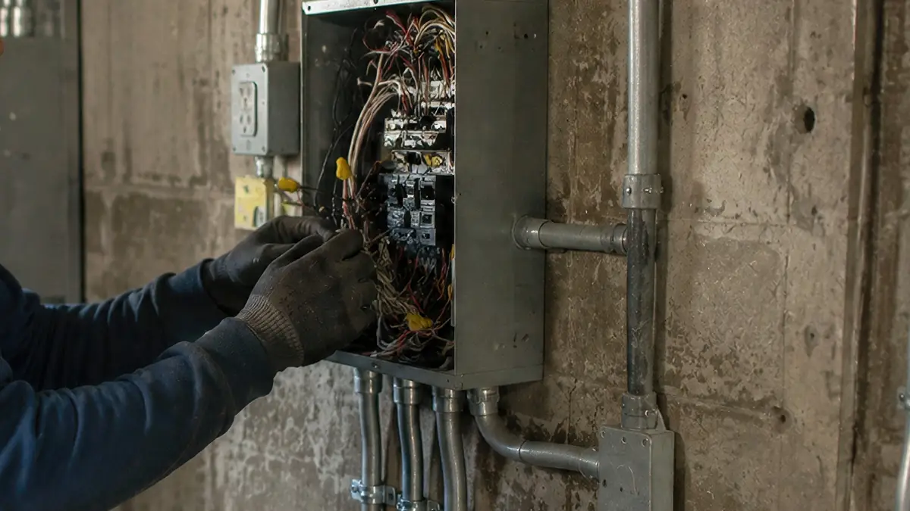
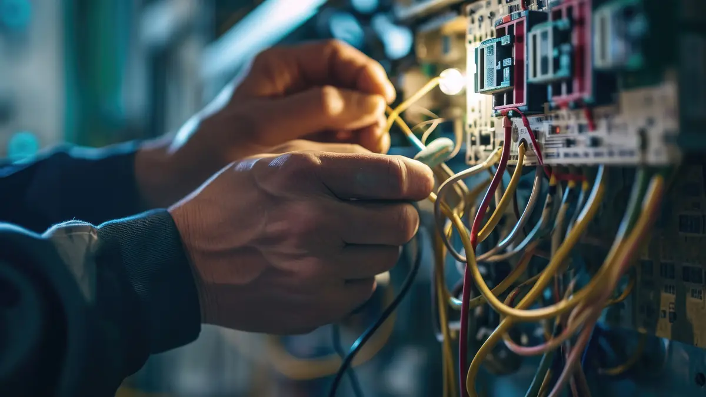

In short
A consumer unit (fuse box) is the board that distributes power around your home and protects each circuit. If yours is old, has rewirable fuses or lacks RCD protection, it's worth replacing. I supply and fit new consumer units, test every circuit and give you the certificates. Most changes take around a day.
Signs you may need a new consumer unit
- Rewirable (wire) fuses or old ceramic fuses
- A wooden back board or a plastic casing instead of metal
- No RCDs, the safety switches with a test button
- Circuits that trip often, or fuses that keep blowing
- Scorch marks, a burning smell or buzzing near the board
- An EICR that recommends replacing it
What a modern consumer unit gives you
- RCD protection that cuts the power quickly if there's a fault, reducing the risk of electric shock.
- A metal enclosure. Non-combustible casings are the current requirement for homes.
- Surge protection where it's recommended for your property.
- Clearly labelled circuits, so you know what each switch controls.
- Room to grow, with space to add circuits later.

What happens on the day
- Survey and quote. I look at your existing board and circuits, check what's needed and give you a free quote.
- Testing before work. I test your existing circuits before disconnecting anything, so any faults are found before the new unit goes in.
- Power off and swap. I isolate the supply, remove the old unit, then fit and connect the new one. The power is off for several hours.
- Testing and labelling. I test every circuit again, label the board and check everything is working before I leave.
- Paperwork. You receive an Electrical Installation Certificate, and as a NAPIT registered electrician I notify building control for you.

What if there are problems with the existing wiring?
Sometimes testing shows something that needs fixing before a new unit can be connected safely, such as missing earthing or bonding, or a damaged cable. I'll explain what I've found, why it matters and what it involves before doing anything extra. If the wiring is in poor condition throughout, you may want to look at a rewire.
Common questions about consumer units
Do I have to replace my fuse box?
Not automatically. But a board without RCD protection, or in a combustible casing, doesn't meet current standards, and an EICR may recommend replacing it. If you're unsure, I can look at it and tell you straight.
How long will the power be off?
Usually several hours on the day, depending on the size of the board and the state of the existing wiring. I'll give you a realistic idea when I quote so you can plan around it.
Do I need building regulations approval?
Replacing a consumer unit in England is notifiable work. Because I'm registered with NAPIT, I can notify building control through the scheme and you'll receive a compliance certificate, so you don't need to arrange anything yourself.
Will I need an EICR first?
No. I test the existing circuits before and after fitting the new unit as part of the job. If you want a full report on the whole installation, I can do an EICR separately.
Can I stay in the house while it's done?
Yes. You'll be without power for part of the day. I'll let you know when it's going off and when it's back on.